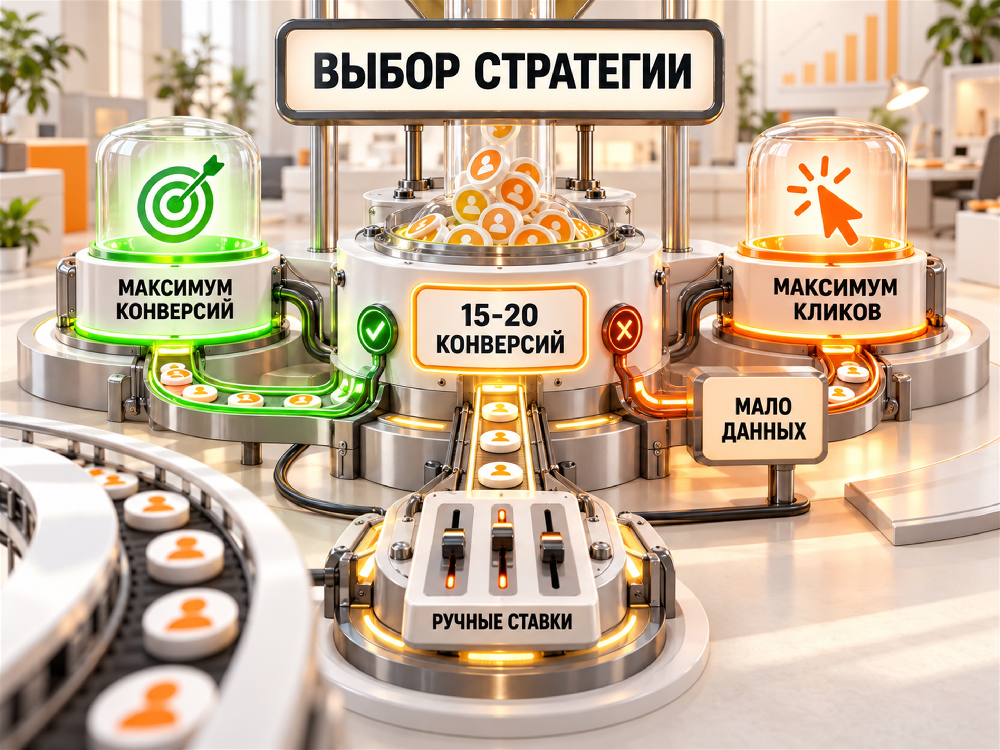

Стратегии в Яндекс Директе 2026: какую выбрать
В большинстве рекламных кампаний я рекомендую использовать алгоритмы Яндекса и стратегию «Максимум конверсий». Но она хорошо работает только тогда, когда у системы достаточно данных для обучения.
Практический ориентир - примерно 15-20 конверсий в неделю. Сам Яндекс рекомендует обеспечивать конверсионным стратегиям бюджет как минимум на 10-20 конверсий за неделю. Если событий заметно меньше, алгоритму сложнее понять, кто именно с большей вероятностью оставит заявку или совершит покупку.
Если такого объема конверсий нет, чаще разумнее начать со стратегии «Максимум кликов» с ограничением стоимости клика. Ручные ставки я использую значительно реже - в основном в очень конкурентных поисковых нишах, где нужно максимально контролировать участие в аукционе.
Коротко выбор выглядит так:
| Ситуация | Что выбрать |
|---|---|
| Стабильно получаете 15-20 и более конверсий в неделю | Максимум конверсий |
| Конверсий пока мало или кампания запускается с нуля | Максимум кликов |
| Очень дорогой и конкурентный поиск, нужен жесткий контроль ставок | Максимум кликов с ручными ставками |
| Бизнес может корректно передавать и считать маржу | Максимум прибыли |
Как работает Яндекс Директ: простое объяснение для новичков.

Как работают автостратегии в Яндекс Директе
Автостратегия не назначает одну ставку на всю кампанию. Она оценивает вероятность клика и целевого действия для разных условий показа, а затем распределяет ставки с учетом выбранной цели и ограничения по расходам.
Поэтому стратегия работает не сама по себе. Ей нужны доступный сайт, корректные цели в Яндекс Метрике и понятный результат, который действительно связан с бизнесом. Если оптимизироваться по случайному событию, алгоритм может привести больше таких событий, но это не означает рост заявок или продаж.
После запуска кампании системе нужно собрать данные. Существенная смена цели, модели атрибуции или ограничения может потребовать нового периода обучения. Подробно о причинах остановки обучения я написал в статье про обучение стратегии в Яндекс Директе.
Максимум конверсий - основной вариант для большинства кампаний
Если задача рекламы - получать заявки, заказы, регистрации или другие конкретные действия, логичнее оптимизировать рекламу именно под эти действия, а не под клики.
Стратегия «Максимум конверсий» анализирует накопленную статистику и автоматически меняет ставки в зависимости от вероятности целевого действия. Условно, если система считает одного пользователя более перспективным, она может активнее участвовать в аукционе именно за него.
Для работы стратегии необходимо подключить Яндекс Метрику и выбрать цели, по которым будет идти оптимизация. Это должны быть действительно полезные бизнесу действия: заявка, заказ, звонок, покупка, регистрация.
Как проверить цель в Яндекс Метрике.
Сколько конверсий нужно для обучения
Здесь часто возникает проблема. Рекламодатель включает оптимизацию по конверсиям, получает две заявки за неделю и ожидает, что алгоритм уже сможет эффективно находить похожих клиентов.
Данных для этого мало.
Яндекс рекомендует выбирать цель, которая достигается не менее 10 раз в неделю, а в рекомендациях по эффективности указывает ориентир в 10-20 конверсий за неделю. На первоначальный сбор статистики и обучение стратегии может понадобиться 1-2 недели.
На практике я предпочитаю ориентироваться примерно на 15-20 целевых действий. Чем больше качественных данных получает алгоритм, тем проще ему находить закономерности.
При этом бессмысленно создавать очень простую цель только ради количества событий. Например, оптимизация по просмотру страницы не поможет бизнесу, если просмотр никак не связан с вероятностью заявки.
Как выбрать ограничение: бюджет, CPA или ДРР
Внутри «Максимума конверсий» можно выбрать не только цель, но и способ ограничить расходы. Это разные задачи, поэтому их не стоит смешивать в одной настройке.
- Недельный бюджет - вариант для запуска и накопления статистики, когда важнее дать кампании возможность находить конверсии в рамках доступной суммы.
- Средняя цена конверсии - выбор для бизнеса, который знает приемлемую стоимость заявки, заказа или другого целевого действия.
- ДРР - вариант для проектов, где в Метрику передается ценность конверсии и расходы можно сопоставить с доходом.
Отдельно выбирается модель оплаты. При оплате за клики деньги списываются за переходы, а заданная цена конверсии или ДРР служит ориентиром для алгоритма. При оплате за конверсии рекламодатель платит за достигнутые цели, поэтому такой режим требует особенно аккуратной аналитики и понятной цели.
Когда лучше выбрать «Максимум кликов»
Если конверсий мало, оптимизироваться по ним просто не на чем. В таком случае я обычно использую стратегию «Максимум кликов».
Яндекс автоматически управляет ставками и старается привести как можно больше переходов при заданных ограничениях. Можно ограничивать среднюю цену клика или работать в рамках установленного бюджета.
Например, вы можете указать среднюю цену клика, которую готовы получать. При этом отдельные переходы могут стоить дороже или дешевле заданной величины. Ограничение работает именно на среднюю стоимость.
Эта стратегия подходит:
- при запуске новой рекламной кампании;
- если статистики по конверсиям пока недостаточно;
- в нишах с редкими заявками;
- если бюджет физически не позволяет получать необходимые 10-20 конверсий каждую неделю.
Главное - не оценивать такую кампанию только по цене перехода.
Клик за 50 рублей не обязательно лучше клика за 300 рублей. Первый посетитель может просто посмотреть сайт и уйти, а второй - оставить заявку. Конечный показатель зависит от стоимости целевого действия, а не от того, насколько дешево удалось купить трафик.
CPA в Яндекс Директе: что это и как считать стоимость конверсии.
Когда нужны ручные ставки
Стратегия «Максимум кликов с ручными ставками» позволяет самостоятельно задавать ставки для отдельных условий показа. Сейчас ручное управление доступно для кампаний только на поиске.
В большинстве обычных проектов я не вижу необходимости постоянно управлять каждой ставкой вручную. Алгоритмы Яндекса имеют гораздо больше данных о конкретном пользователе и конкретном аукционе.
Но есть исключения.
В моей практике ручные ставки могут иметь смысл в очень дорогих и конкурентных нишах, где один клик может стоить несколько тысяч рублей и бизнесу критически важно получать максимально возможный объем поискового трафика.
Классические примеры - эвакуаторы или срочное вскрытие замков. Человеку нужна услуга прямо сейчас, поэтому объявления в верхней части выдачи могут иметь особенно большое значение.
В таких ситуациях ставки иногда приходится контролировать вручную и достаточно агрессивно участвовать в аукционе.
Можно ли ручными ставками обеспечить первое место
Нет. Даже очень высокая ставка не гарантирует постоянное первое место.
Современный аукцион Яндекс Директа работает не по принципу «заплатил больше всех и всегда находишься первым». Система оперирует объемом трафика, а конкретный внешний вид и позиция объявления могут меняться от одного показа к другому.
При выборе объявления учитываются ставка, прогноз CTR, качество объявления, конкретный поисковый запрос и формат рекламного блока. Яндекс прямо указывает, что показ на определенной позиции не гарантируется даже при ставке, достаточной для получения высокого объема трафика.
Поэтому выражение «держать первое место» сейчас довольно условное.
С помощью высокой ставки можно претендовать на больший объем трафика и чаще попадать в наиболее заметные рекламные блоки. Но купить постоянную первую позицию технически нельзя.
А что со стратегией «Максимум прибыли»
В Единой перфоманс-кампании Яндекс также предлагает стратегию «Максимум прибыли». Она предназначена для проектов, где можно корректно рассчитать среднюю маржу от конверсии. Алгоритм пытается найти баланс между количеством конверсий, их стоимостью и итоговой прибылью от рекламы.
Для большинства небольших рекламных кампаний я бы не начинал именно с нее. Сначала нужно наладить аналитику, передачу конверсий и понимание экономики бизнеса.
Если эти данные уже есть, стратегия становится значительно интереснее.
Когда нужна пакетная стратегия
Пакетная стратегия нужна, когда несколько кампаний решают одну задачу и их можно оценивать по общей экономике. Например, у них совпадают цель, модель оплаты и допустимая цена результата.
Главный смысл такого объединения - не свести все кампании в одну, а дать стратегии больше общей статистики и возможность распределять бюджет между кампаниями внутри пакета. Это бывает полезно, если в каждой отдельной кампании конверсий мало, но вместе данных уже достаточно для обучения.
Не стоит объединять в один пакет кампании с разными целями, регионами и бизнес-экономикой. Иначе алгоритм будет искать общий компромисс, который окажется неудобным для каждой группы. Настройку и проверку общего бюджета я подробно разбираю в статье про пакетную стратегию Яндекс Директа.
Что выбрать при запуске новой кампании
Я использую простой принцип.
Если кампания способна стабильно собирать хотя бы 10-20 целевых действий в неделю, в первую очередь рассматриваю «Максимум конверсий». В большинстве проектов это основной вариант.
Если конверсий недостаточно, начинаю с «Максимума кликов» и ограничиваю стоимость трафика. Кампания собирает статистику, после чего можно оценивать возможность перехода на оптимизацию по конверсиям.
Ручные ставки оставляю для отдельных поисковых кампаний, где аукцион очень дорогой и требуется максимальный контроль объема трафика.
Выбирать стратегию только по принципу «эта сейчас считается лучшей» не нужно. Сначала смотрите, сколько реальных конверсий может получать кампания, какой бюджет на это выделен и какой результат реклама должна приносить бизнесу.
Как понять, что стратегия работает
Не оценивайте автостратегию по одному дню или по одному дорогому клику. На старте смотрите, получает ли кампания целевые действия, насколько корректно они передаются и укладывается ли результат в экономику бизнеса.
- Дайте кампании время на сбор статистики после запуска или заметной смены настроек.
- Сравнивайте не только количество кликов и их цену, но и стоимость качественной заявки, заказа или продажи.
- Проверяйте, не слишком ли жестко задана средняя цена конверсии, ДРР или недельный бюджет.
- Если бюджет не расходуется, сначала ищите ограничение, недостаток трафика или проблему с целью, а не сразу меняйте стратегию.
Переход с кликов на конверсии имеет смысл тогда, когда выбранная цель уже достигается стабильно и по ней накопилась статистика. После смены режима результат нужно оценивать заново, а не сравнивать первый день с уже обученной кампанией.
Частые вопросы о стратегиях Яндекс Директа
Сколько времени нужно на обучение стратегии?
Обычно я закладываю на первичный сбор данных 1-2 недели. Точный срок зависит от объема трафика, числа конверсий и стабильности настроек. В этот период не стоит без необходимости менять цель, бюджет или ограничение.
Почему стратегия не тратит бюджет?
Чаще всего причина в слишком жестком ограничении, небольшом объеме доступного трафика, низкой цене конверсии или некорректной цели. Сначала проверьте настройки и рекомендации в Директе, затем оцените, хватает ли кампании данных для обучения.
Что будет после смены стратегии?
Смена допустима, но частые изменения мешают оценке результата и могут запустить новое обучение. Сначала проверьте цели, экономику и накопленную статистику, а после изменения дайте кампании время адаптироваться.
Когда переходить с кликов на конверсии?
Когда кампания получает стабильные целевые действия и вы понимаете их качество. Практический ориентир - около 10 и более конверсий в неделю по выбранной цели. Если данных меньше, безопаснее продолжить сбор статистики через «Максимум кликов» или конверсионную стратегию с более мягким ограничением.